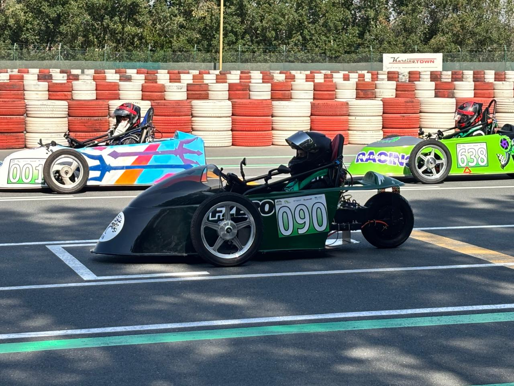
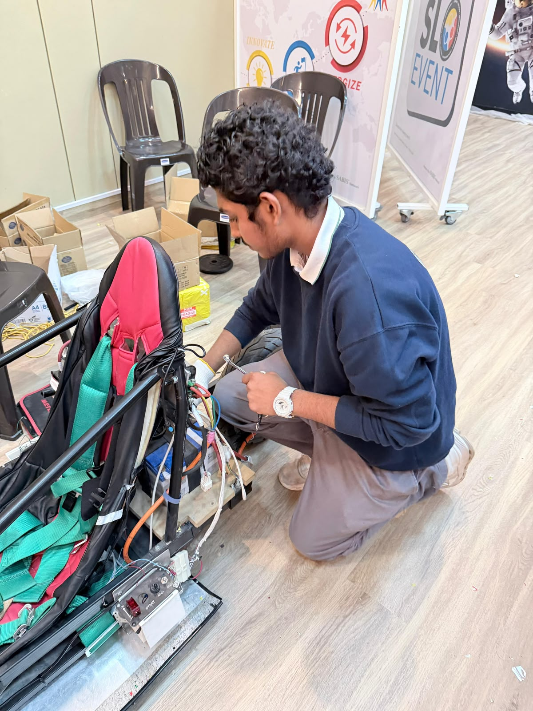

Vehicle packaging
A small endurance car forces close coordination between steering, motor, batteries, controls, brakes and the driver. Decisions about one part affect mass distribution, access for repair and available space elsewhere.
BUILD 05 / ENGINEERING
Packaging, material choices, airflow study and repeatable fault-finding on the electric race car.
Read the case study
I contributed to mechanical decisions and testing across the EV project, including floorboard materials, weight, steering layout, battery mounting, braking components and overall packaging. I also used a CFD airflow visualization to examine the existing body and explore a smoother shape in CAD.
Supported mechanical packaging and material-selection discussions.
Reviewed an airflow visualization from a CFD model of the race car.
Used testing and fault diagnosis to guide vehicle changes and repairs.
A small endurance car forces close coordination between steering, motor, batteries, controls, brakes and the driver. Decisions about one part affect mass distribution, access for repair and available space elsewhere.
A 3D representation of the vehicle was used in CFD to visualize airflow around the body. Disrupted regions suggested possible geometry changes, which were explored in CAD. The visualization is a simulation, not a measured on-track aerodynamic result.
For electrical and control faults, the team traced the failure, changed the suspect part or connection, then repeated the same test to confirm the fault was actually resolved.
PROJECT EVIDENCE
Photographs, diagrams and certificates from this project. Open an image to see it at full size.

